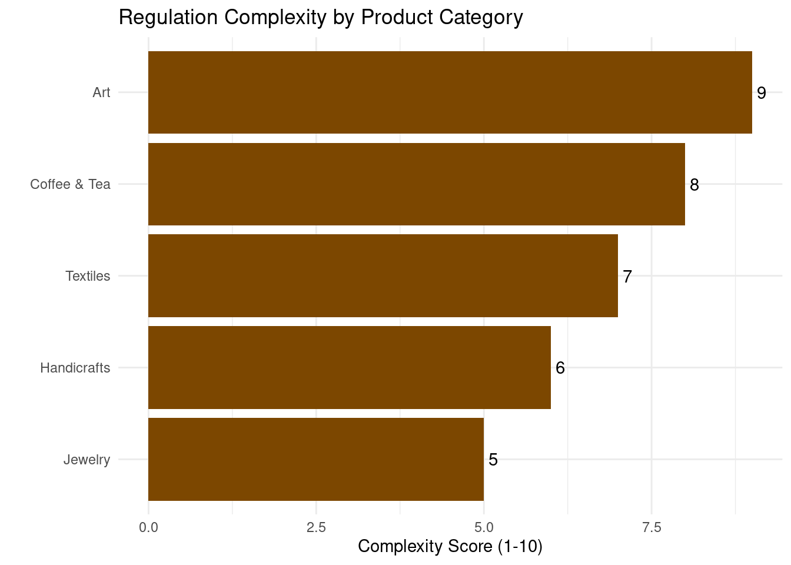

Comprehensive Market Analysis
File: market-analysis.qmd
1. East African E-commerce Landscape
The East African e-commerce market is experiencing rapid growth, driven by increasing internet penetration, smartphone adoption, and a growing middle class. This analysis focuses on the opportunities for RwandaMarket in facilitating trade of Rwandan products to the Kenyan market.
1.1 Market Size and Growth Projections
The East African e-commerce market is projected to grow from $1.5 billion in 2021 to $4.0 billion by 2026, representing a CAGR of 21.7%.
1.2 Key Market Drivers
- Increasing Internet Penetration: Expected to reach 50% across East Africa by 2025.
- Smartphone Adoption: Projected to grow to 65% of all mobile connections by 2025.
- Growing Middle Class: Estimated to reach 15% of the East African population by 2030.
- Improved Logistics: Investments in infrastructure enhancing last-mile delivery capabilities.
- Government Initiatives: Supportive policies promoting digital trade and cross-border e-commerce.
2. Target Market Segments
RwandaMarket’s target market can be segmented into two main categories: B2C and B2B.
2.1 B2C Segment
- Urban Professionals (25-45 years)
- High disposable income
- Tech-savvy and frequent online shoppers
- Interest in unique, high-quality products
- Expatriates and Tourists
- Seeking authentic African products
- Higher willingness to pay for quality and uniqueness
- Conscious Consumers
- Interested in ethically sourced and sustainable products
- Willing to pay premium for products with a story
2.2 B2B Segment
- Retail Businesses
- Small to medium-sized retailers in Kenya
- Looking to diversify product offerings
- Hospitality Industry
- Hotels, resorts, and lodges
- Seeking unique, local products for guest experiences
- Corporate Gift Market
- Companies looking for unique, high-quality corporate gifts
- Emphasis on products that reflect African culture and craftsmanship

3. Competitor Analysis
3.1 Direct Competitors
- Jumia Kenya
- Strengths: Wide reach, established brand
- Weaknesses: Less focus on artisanal products
- Kilimall
- Strengths: Strong in electronics and fashion
- Weaknesses: Limited offering in authentic African products
- Masoko (by Safaricom)
- Strengths: Backed by major telecom, integrated M-Pesa
- Weaknesses: Newer to the market, still building product range
3.2 Indirect Competitors
- Traditional Markets and Souvenir Shops
- Strengths: Physical presence, haggling experience
- Weaknesses: Limited reach, inconsistent quality
- African-Focused Etsy Sellers
- Strengths: Global reach, unique products
- Weaknesses: Higher shipping costs, longer delivery times
- Local Rwandan Product Exporters
- Strengths: Direct sourcing relationships
- Weaknesses: Often lack e-commerce capabilities
3.3 Competitive Positioning Map

4. Consumer Behavior Insights
4.1 Key Purchasing Factors
- Authenticity: 78% of surveyed consumers value product authenticity
- Quality: 85% prioritize quality over price for artisanal products
- Story: 62% are more likely to purchase products with a compelling backstory
- Convenience: 70% prefer easy online shopping and fast delivery options
- Price: While important, it’s less critical for unique, high-quality items
4.2 Online Shopping Trends

5. Regulatory Environment
5.1 East African Community (EAC) Regulations
- Customs Union: Facilitates duty-free trade between member states
- Common Market Protocol: Allows free movement of goods, services, and capital
5.2 Kenyan E-commerce Regulations
- Data Protection Act (2019): Ensures protection of personal data
- Consumer Protection Act: Safeguards consumer rights in digital transactions
5.3 Cross-Border Trade Considerations
- EAC Certificate of Origin: Required for preferential tariff treatment
- Standards and Quality Requirements: Compliance with EAC standards necessary
6. SWOT Analysis
Strengths
- Unique, authentic Rwandan products
- Strong relationships with artisan cooperatives
- Tech-driven operations for efficiency
Weaknesses
- New entrant in competitive Kenyan market
- Initial limited brand recognition
- Potential supply chain complexities
Opportunities
- Growing demand for authentic African products
- Increasing cross-border trade within EAC
- Rising adoption of e-commerce in Kenya
Threats
- Potential economic downturns affecting discretionary spending
- Changes in trade regulations
- Intense competition from established e-commerce players
7. Market Entry Strategy
- Phased Approach:
- Initial focus on niche market of authentic Rwandan products
- Gradual expansion of product categories and target segments
- Partnerships:
- Collaborate with Kenyan influencers and bloggers
- Partner with tourism agencies and hotels
- Omnichannel Presence:
- Launch e-commerce platform with mobile-first approach
- Establish a flagship store in Nairobi for physical presence
- Marketing Focus:
- Emphasize product authenticity and stories
- Leverage social media for brand building and customer engagement
- Customer Experience:
- Implement AR for product visualization
- Offer hassle-free returns and excellent customer support
Conclusion
The East African e-commerce market, particularly in Kenya, presents a significant opportunity for RwandaMarket. With its unique positioning in authentic Rwandan products, tech-driven operations, and focus on customer experience, RwandaMarket is well-positioned to capture a share of this growing market. Key to success will be effectively differentiating from competitors, navigating the regulatory landscape, and continually adapting to evolving consumer preferences.